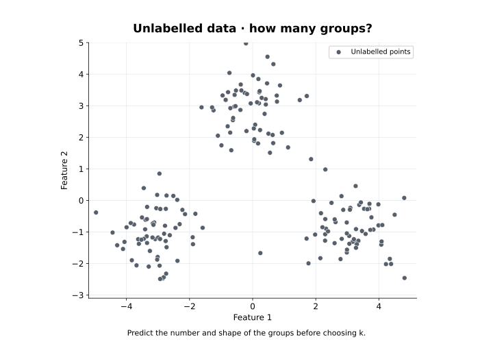
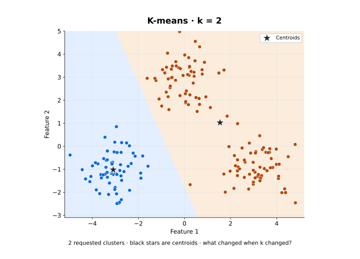
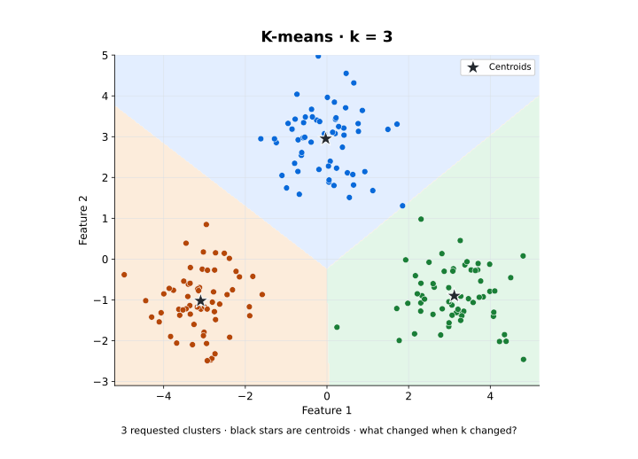
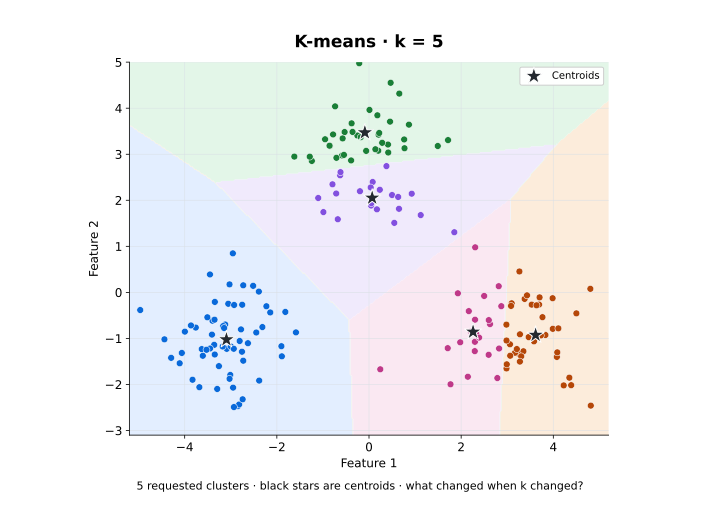
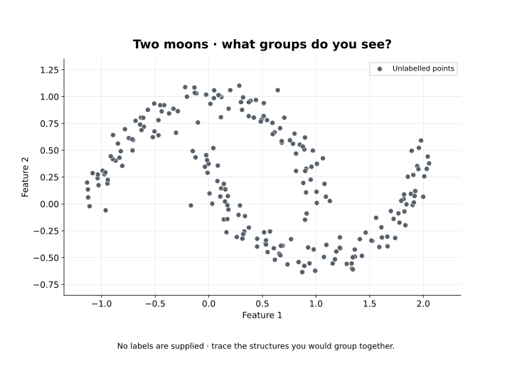
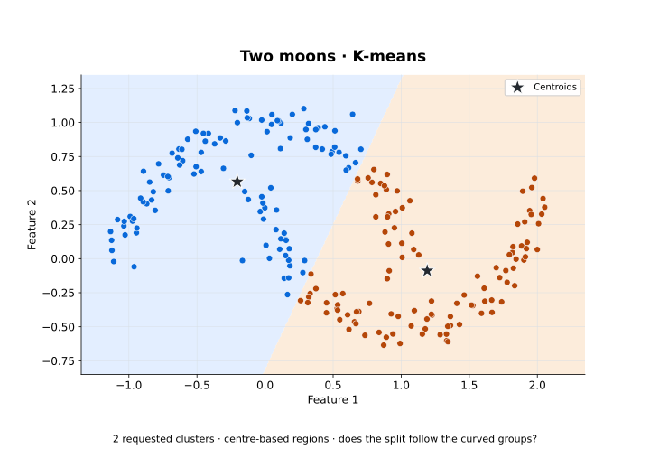
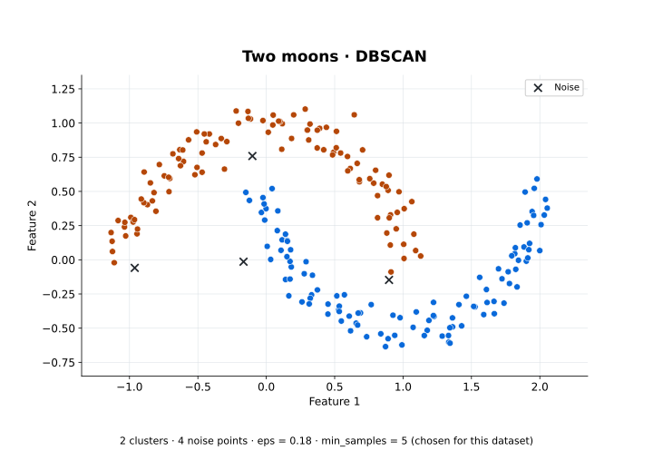

Remove the labels — what can the machine still see?
Last week every example came with a target attached. Take it away and the picture barely changes — which is exactly the problem.
You can still see two groups. So can most people. But nobody supplied them, which turns a comfortable question into an uncomfortable one:
Who decided how many groups there are?
What actually changed
One important unsupervised task is clustering: organising examples into groups using some notion of similarity. The usual starting definition is that examples within a cluster should be more similar to one another than to examples in other clusters.
The difficult word in that sentence is similar.
Similarity still has to be designed
Suppose we represent customers using age, location, purchase frequency, average spend and products viewed. Two customers can be close in age and far apart in buying behaviour, or live two countries apart and buy nearly identical things. Which of those pairs is "similar" depends entirely on what we chose to record.
The algorithm sees the representation we provide, and the question from Weeks 2 and 9 comes back unchanged:
What should count as similar for this problem?
Clustering can group customers, organise documents, divide images into regions or flag unusual observations. None of that makes a cluster a real-world category. Cluster 0, Cluster 1 and Cluster 2 are identifiers for an algorithm's output — interpreting them is still our job.
Why this matters this week
Everything that follows produces groups. The work is deciding which of those groups you are entitled to believe.
Move the centres — how does K-means discover groups?
Suppose unlabelled points sit in three compact regions. We can see a grouping; the algorithm has not been given one. K-means starts from a decision that is ours, not its:
Choose
k— the number of clusters to request.
For k = 3 it starts with three candidate centres, called centroids. A centroid is the mean position of the points currently assigned to it. From there it repeats two steps.

Predict before running
If a centroid starts too far to the right, where does it move once nearby points are assigned to it? And what happens if one distant point is assigned to it as well?
The mean moves towards the assigned points — including the distant one. Which tells you the shape of problem K-means is built for: groups that form reasonably compact regions around a centre.
from sklearn.cluster import KMeans
model = KMeans(n_clusters=3, random_state=42, n_init=10)
labels = model.fit_predict(X)
centroids = model.cluster_centers_The returned values 0, 1 and 2 are identifiers. They are not class names and they carry no meaning until somebody gives them one.
One dataset, three values of k
The demonstration uses 180 deterministic points in three compact regions. The data and the axes never move; only k changes. Black stars mark the fitted centroids.

k = 2 — too few | k = 3 — matches what we see |
|---|---|
 |  |
| Cluster sizes 60, 120. Two visible regions are merged into one. | Cluster sizes 60, 60, 60. Each region recovered exactly. |
Figure 4. At k = 2 the algorithm did not fail — it did precisely what was asked, which was to produce two groups. Plots created for these pages by the clustering demonstration; no external image licence is used.

k = 5, cluster sizes are 60, 38, 38, 22, 22 — two of the three regions get split down the middle. The points did not change. The requested number of groups did. Plot created for these pages by the clustering demonstration; no external image licence is used.Why you cannot pick k by the score
There is an obvious-looking escape: let the algorithm choose k by measuring how tight the clusters are. Inertia — the total squared distance from each point to its own centroid — is the usual measure, and on this dataset it reads:
k | Cluster sizes | Inertia |
|---|---|---|
| 2 | 60, 120 | 946.7 |
| 3 | 60, 60, 60 | 204.1 |
| 5 | 60, 38, 38, 22, 22 | 149.9 |
The lowest inertia belongs to k = 5, which is the one that splits two perfectly good regions in half. Inertia keeps falling as k rises, all the way to one cluster per point, where it reaches zero.
The tightest clustering is not the most useful one. Choosing
kis a judgement, and it stays ours.
Why this matters this week
K-means did not discover the one true grouping at k = 3. It produced a grouping under the representation, the k, the initialisation and the centre-based assumption we handed it. Change any of the four and the answer changes with it.
What if the groups are not blobs? — does every algorithm see the same structure?
K-means works naturally when groups are compact regions around a centre. Nothing obliges data to be shaped that way.
The second dataset is 220 points in two interleaving crescents — the same shape as Week 9, with its own fixed settings.

Centres against density
Ask K-means for two clusters and it will give you two clusters. Then compare it with DBSCAN, which looks for dense, connected regions instead of organising everything around a centre. Two parameters carry the intuition: eps, the neighbourhood radius around a point, and min_samples, the local density a neighbourhood has to reach.
from sklearn.cluster import DBSCAN
model = DBSCAN(eps=0.18, min_samples=5)
labels = model.fit_predict(X)K-means, k = 2 | DBSCAN, eps = 0.18 |
|---|---|
 |  |
| Cluster sizes 110, 110. The boundary cuts across both shapes. | 2 clusters recovered, and 4 of the 220 points marked as noise. |
Figure 7. K-means did not break. Its assumption — that a group is whatever lies nearest a centre — simply does not describe a crescent. Plots created for these pages by the clustering demonstration; no external image licence is used.
Two things in that right-hand panel are worth naming. DBSCAN was never told there were two groups — it found two. And it is allowed to say neither: those four noise points are a legitimate output, not a failure.
eps = 0.18 is tuned to the scale and density of these particular crescents. It is not a universal setting, and on a different dataset it would be meaningless.
A third view — hierarchy
Hierarchical clustering records groups within groups. An agglomerative approach starts from small groups and repeatedly merges; a divisive one starts from a single large group and repeatedly splits. A dendrogram displays that history.
k was chosen in advance — the height at which you cut the tree is what decides how many groups you get. Diagram created for these pages; no external image licence is used.Why this matters this week
Three algorithms, one dataset, three different answers — and none of them is wrong. Each encodes a different assumption about what a group is. The honest version of "we clustered the data" names which assumption was used.
People who liked this also liked — where do recommendations come from?
Clustering asks which examples look similar. Recommendation asks a different question: can patterns of similarity and preference predict what somebody wants next?
Recommendation can use similarity without first clustering users or items into groups at all.
Five people, five films, and two gaps.
| Film A | Film B | Film C | Film D | Film E | |
|---|---|---|---|---|---|
| Aoife | 5 | 4 | ? | 1 | ? |
| Ben | 5 | 5 | 4 | 1 | 2 |
| Carla | 4 | 4 | 5 | 2 | 1 |
| Darragh | 2 | 1 | 2 | 5 | 4 |
| Eimear | 1 | 2 | 1 | 4 | 5 |
What would you recommend to Aoife — and which rows gave you the evidence?
Ben and Carla share Aoife's high ratings for Films A and B and her low rating for Film D. Both of them prefer Film C to Film E. That is evidence for recommending Film C — and notice what it is not based on: nobody described what Film C is about.
This is collaborative filtering: using patterns in collective behaviour to estimate a preference nobody has observed yet.
Two ways to use the same table
Both are classical collaborative strategies, and neither exhausts the possibilities. The evidence in both cases comes from ratings, viewing, purchases or other interactions — behaviour, not description.
When description is available
If item features exist — genre, director, cast, release year, language — a content-based recommender can find items related to what a user already prefers. A hybrid combines the two signals.
The distinction is where the relationship comes from: behaviour across users and items, or features describing the items themselves.
Why this matters this week
A recommendation is a prediction, in exactly the sense Week 9 used the word — will this user click, watch, buy or rate highly? But it is also a decision about what the user gets the chance to see at all. That second half has a consequence, and it is the last thing on this page.
Useful pattern or misleading pattern — what can go wrong?
A clustering is an output, not a discovery
Features, numerical scale, parameters and algorithmic assumptions all shape the grouping that comes back. K-means and DBSCAN can disagree about the same points and both be behaving correctly, because they are looking for different things.
Which assumptions make sense for this problem?
Four clusters in the output is not evidence that four kinds of customer exist in the world.
Cold start
A new user has no ratings, no purchases and no viewing history, so a collaborative approach has almost nothing to work with. A new item has the matching problem: nobody has interacted with it yet.
This is the cold-start problem. Item features or a short set of opening preference questions can supply other evidence, but the missing history is real and no amount of algorithm fixes it.
Preferences and context move
Old behaviour goes stale as interests change. An account can also represent more than one person: a household profile holding children's programmes, crime dramas, football and documentaries is not one stable taste, and averaging it describes nobody.
Every observed interaction has a time and a context. Treating all of them as equally current expressions of one person's preference is a modelling assumption, not a neutral default.
Recommendations change the next dataset
A recommender does not sit outside the process that generates its evidence. It takes part in it.
So: if recommendations influence what people see, is the next dataset independent of the system that produced the recommendations?
No. It records behaviour that happened after the system helped decide what was visible.
Why this matters this week
Weeks 8 to 10 moved from learning from data, to prediction with labels, to structure without them. The algorithms changed every week. The discipline did not: inspect the representation, name the assumptions, and ask what the evidence actually supports.